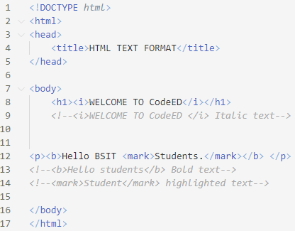

HTML TEXT FORMATTING
| ELEMENTS | DESCRIPTION |
|---|---|
| <b> </b> | Defines bold text |
| <em> </em> | Defines emphasized text |
| <i> </i> | Defines italic text |
| <small> </small> | Defines smaller text |
| <sub> </sub> | Defines subscripted text |
| <strong> </strong> | Defines important text |
| <mark> </mark> | Defines marked/highlighted text |
| <sup> </sup> | Defines superscripted text |
| <del> </del> | Defines deleted text |
| <ins> </ins> | Defines inserted text |
Example:
Sample code for <b> </b>, <i> </i>, <mark> </mark>

Output: